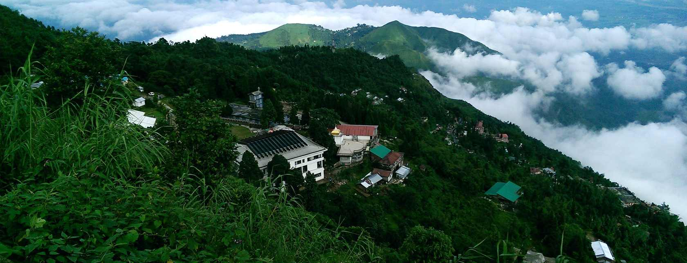
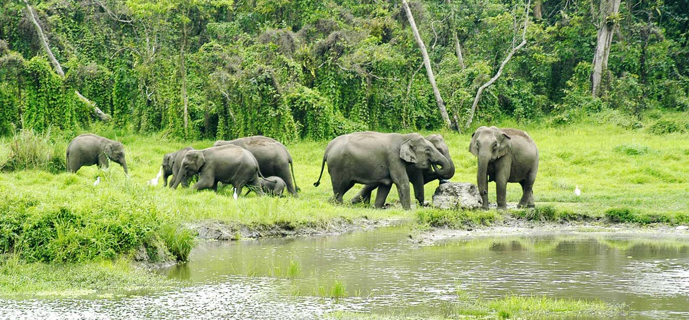

DARJEELING
When the topic is top hill station of West Bengal, Darjeeling undoubtedly tops the list. This spectacular hill station of West Bengal is situated in an area which is called as Mahabharata Range and is widely known for its popular tea industry. With mesmerizing sunrises, untouched charm of hills, welcoming locales and old-world charm of the past makes Darjeeling one of the surreal hill stations in West Bengal. This hill station’s iconic attraction is the quintessential steam train which catches the attention of every tourist and is one of a kind experience. However, Darjeeling is not just popular amongst the hill loving people but it is also one of the famous honeymoon destinations in West Bengal.
KALIMPONGis the neighbor hill station of Darjeeling and it is another amazing hill station in West Bengal. This beautiful hill station of West Bengal houses the Mountain Division 27 of the Indian Army and is also the home to Shivalik Hills. Kalimpong also gains attention as it is one of the hill stations in West Bengal which experiences good rainfall. This hill station is famous for Buddhist monasteries, churches and Tibetan handicrafts. Kalimpong is also the home of tigers which is one of the famous National Park in West Bengal called as Neora Valley National Park.


KURSEONG
is a hill station (and sub-divisional town) situated in Darjeeling District of West Bengal, India. Located at an altitude of 1458 meters (4864 ft), Kurseong is just 30 km from Darjeeling. It has a pleasant climate throughout the year and the winters are not as severe as Darjeelings. The local name of Kurseong is "Kharsang" which in the Lepcha language means "Land of White Orchids". Kurseong is about 47 kms from Siliguri and is connected to the city by road and the Darjeeling Himalayan Railway. The nearest airport is at Bagdogra. The Land of the White Orchids nearest major railway station is New Jalpaiguri (NJP) railway station, which is about 53 km from Kurseong. The town is based mainly on schools and tourism. The best times to visit Kurseong are between March end and May and between the end of August and October. The Chogyal (Monarch) of Sikkim ceded Kurseong to the British Empire in 1835. Later in 1880, this small hamlet became a tourist destination for the colonial authorities and was a preferred place for sanatoriums where the sick would recuperate.
DOOARS starting from river Teesta in the East to river Sankoshi in the west, Dooars is a local name given to the floodplains of North-East India around Bhutan. The name 'Dooars' has emerged from 'door' as Dooars is the gateway to Bhutan.
Dooars comprises of several towns and districts in this region including Jalpaiguri, Darjeeling, Siliguri, etc. Geographically, Dooars is blessed with such brilliance in its relief, imagine, the mighty range of mountains of the Eastern Himalayas in the backdrop, a band of thick forests, rich in species of Flora and Fauna, continued with tea gardens, and cut here and there by water body. Somewhere in the middle of all this is Dooars. The gateway you wouldn't want to cross heartlessly.
